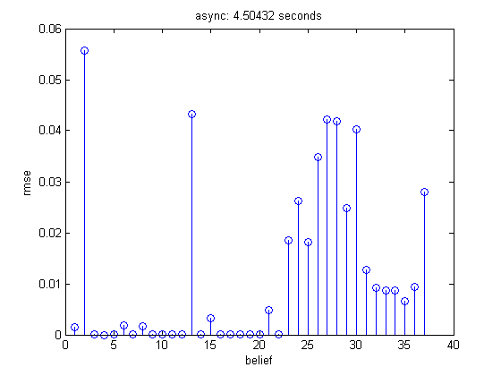
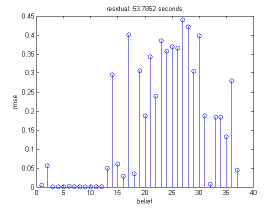
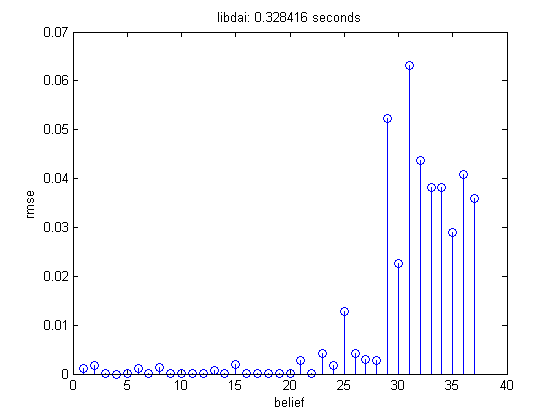

Compare speed and accuracy of belief propagation on the alarm network
Contents
function alarmBelPropDemo
dgm = mkAlarmDgm();
nodeBels = dgmInferNodes(dgm);
dgm.infEngine = 'bp';
asynchronous updates
dgm.infEngArgs = {'updateProtocol', 'async'};
tic
belsAsync = dgmInferNodes(dgm);
t = toc;
figure;
stem(compareFactors(nodeBels, belsAsync));
title(sprintf('async: %g seconds', t));
xlabel('belief');
ylabel('rmse');

synchronous updates
dgm.infEngArgs = {'updateProtocol', 'sync'};
tic
belsSync = dgmInferNodes(dgm);
t = toc;
figure;
stem(compareFactors(nodeBels, belsSync));
title(sprintf('sync: %g seconds', t));
xlabel('belief');
ylabel('rmse');

residual
dgm.infEngArgs = {'updateProtocol', 'residual'};
tic
belsResid = dgmInferNodes(dgm);
t = toc;
figure;
stem(compareFactors(nodeBels, belsResid));
title(sprintf('residual: %g seconds', t));
xlabel('belief');
ylabel('rmse');

libdai
dgm.infEngine = 'libdaibp';
dgm.infEngArgs = {};
tic
belsLibdai = dgmInferNodes(dgm);
t = toc;
figure;
stem(compareFactors(nodeBels, belsLibdai));
title(sprintf('libdai: %g seconds', t));
xlabel('belief');
ylabel('rmse');

end